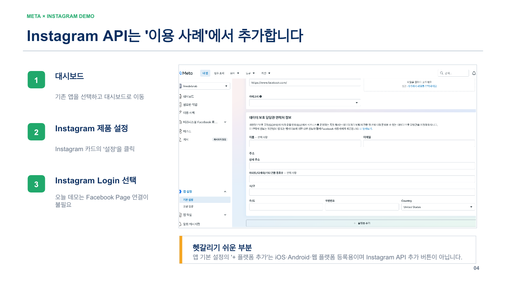
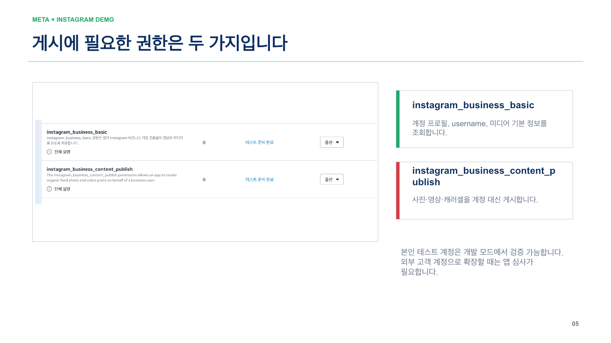
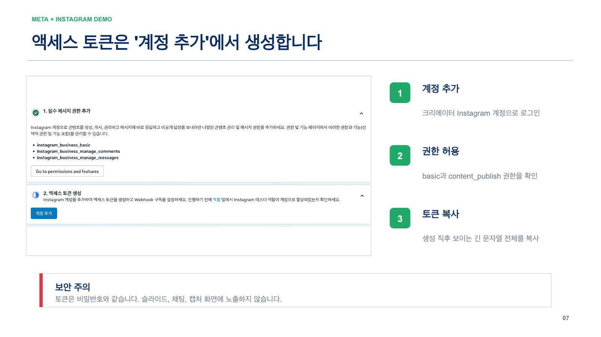

중요: 이 데모의 게시 기능에는 공개 Instagram 프로페셔널 계정이 필요합니다. 프로페셔널 계정에는 크리에이터와 비즈니스 두 유형이 있으며, 둘 중 하나면 1단계는 통과입니다.
01
Instagram 계정 유형을 확인합니다
휴대폰 Instagram 앱에서 진행 · 예상 2~5분
Instagram
의료
대한의료봉사회
프로필 화면
화면 1 — 프로필에서 우측 상단 ≡ 메뉴를 누릅니다. 프로필에 “프로페셔널 대시보드”가 이미 보이면 프로페셔널 계정일 가능성이 높습니다.
화면 1. 프로필 → 메뉴
- 대한의료봉사회 공식 Instagram 계정으로 로그인했는지 @username을 먼저 확인합니다.
- 프로필 우측 상단의 ≡ 메뉴를 누르고 설정 및 활동으로 들어갑니다.
- “프로페셔널 대시보드”가 보이면 아래 화면 2에서 유형만 확인합니다.
계정이 여러 개라면
잘못된 계정을 바꾸지 않도록 프로필 사진과 @username을 소리 내어 확인하세요.
잘못된 계정을 바꾸지 않도록 프로필 사진과 @username을 소리 내어 확인하세요.
설정 및 활동
프로페셔널용
이 문구면 통과
크리에이터 도구 및 관리
크리에이터 도구 및 관리
이 문구도 통과
비즈니스 도구 및 관리
비즈니스 도구 및 관리
화면 2 — “크리에이터 도구 및 관리” 또는 “비즈니스 도구 및 관리” 중 하나가 보이면 프로페셔널 계정입니다.
화면 2. 유형 판정
바로 통과
“크리에이터 도구 및 관리” 또는 “비즈니스 도구 및 관리”가 보입니다.
“크리에이터 도구 및 관리” 또는 “비즈니스 도구 및 관리”가 보입니다.
전환 필요
“프로페셔널 계정으로 전환”이 보이면 아직 개인 계정입니다.
“프로페셔널 계정으로 전환”이 보이면 아직 개인 계정입니다.
계정 유형 및 도구→프로페셔널 계정으로 전환→카테고리 선택→크리에이터
단체 운영 성격상 비즈니스 계정을 이미 쓰고 있다면 굳이 크리에이터로 바꾸지 않아도 됩니다. 현재 데모의 핵심 조건은 “공개 프로페셔널 계정”입니다.
02
Meta Developer 계정과 앱 권한을 확인합니다
PC 브라우저 권장 · 조직 계정 관리자와 함께 진행
화면 1 — Meta for Developers의 “내 앱”에서 기존 데모 앱이 보이는지 확인합니다.
화면 1. 로그인과 앱 확인
- Meta for Developers → 내 앱을 엽니다.
- 대한의료봉사회가 관리할 앱 카드가 보이면 클릭합니다.
- 앱이 안 보이면 Facebook 개인 계정이 다른지, 앱 관리자/개발자 역할 또는 Business Suite 자산 권한이 있는지 확인합니다.
관리자 ≠ 자동 개발자 권한
Business Suite의 단체 관리자와 Meta 개발자 앱 역할은 별개일 수 있습니다. 앱이 조직 비즈니스 소유라면 Business Suite에서 해당 사람에게 앱 자산의 전체 관리 권한을 할당해야 합니다.
Business Suite의 단체 관리자와 Meta 개발자 앱 역할은 별개일 수 있습니다. 앱이 조직 비즈니스 소유라면 Business Suite에서 해당 사람에게 앱 자산의 전체 관리 권한을 할당해야 합니다.

화면 2 — 대시보드의 “이용 사례” 또는 Instagram 제품 설정에서 Instagram API와 Instagram Login을 설정합니다.
화면 2. Instagram API 추가
앱 대시보드→이용 사례→Instagram API→설정
앱 기본 설정 화면 맨 아래의 “+ 플랫폼 추가”는 iOS·Android·웹 플랫폼 등록용입니다. Instagram API를 추가하는 버튼과 혼동하지 마세요.
정상 상태
Instagram 설정 화면에 “액세스 토큰 생성”, “계정 추가” 또는 Instagram Login 관련 설정이 보입니다.
Instagram 설정 화면에 “액세스 토큰 생성”, “계정 추가” 또는 Instagram Login 관련 설정이 보입니다.

화면 3 — 게시 데모에 필요한 핵심 권한 두 가지.
화면 3. 권한 확인
| 권한 | 용도 |
|---|---|
| instagram_business_basic | 프로필, username, 미디어 기본 정보 조회 |
| instagram_business_content_publish | 사진·영상·캐러셀을 해당 계정으로 게시 |
본인/테스터 계정 데모는 개발 모드에서 진행할 수 있습니다. 외부 고객 계정까지 서비스하려면 앱 검토 및 권한 승인 절차가 추가될 수 있습니다.
03
Instagram 계정이 공개 상태인지 확인합니다
휴대폰 Instagram 앱 · 전환 직후 재확인
계정 공개 범위
정상
“비공개 계정” 스위치가 꺼져 있습니다.
“비공개 계정” 스위치가 꺼져 있습니다.
프로페셔널 계정으로 전환할 때 공개 전환 안내가 나올 수 있습니다.
화면 1 — 설정 및 활동 → 계정 공개 범위. 스위치가 꺼져 있어야 합니다.
화면 1. 공개 범위 확인
프로필 ≡→설정 및 활동→계정 공개 범위
- 비공개 계정 스위치가 꺼져 있는지 확인합니다.
- 다른 사람의 휴대폰 또는 로그아웃된 브라우저에서 계정 프로필이 보이는지 확인합니다.
- 전환 직후라면 앱을 완전히 닫았다 다시 열어 상태를 갱신합니다.
주의
비공개 개인 계정을 크리에이터 계정으로 바꾸면 공개 전환이 필요하며, 기존 팔로우 요청이 자동 승인될 수 있다는 안내가 표시될 수 있습니다. 전환 전에 단체 담당자와 확인하세요.
비공개 개인 계정을 크리에이터 계정으로 바꾸면 공개 전환이 필요하며, 기존 팔로우 요청이 자동 승인될 수 있다는 안내가 표시될 수 있습니다. 전환 전에 단체 담당자와 확인하세요.
1단계와 3단계가 겹쳐 보이는 이유: 크리에이터 전환 과정에서 공개 계정이 되지만, 미팅에서는 전환 완료 여부와 실제 공개 상태를 각각 확인해야 문제 원인을 빠르게 분리할 수 있습니다.
04
데모 앱 URL에서 연결 준비를 확인합니다
PC Chrome 또는 Safari 권장 · 팝업 차단 해제
대한의료봉사회
Instagram 게시물 만들기
모집 일정 입력 → 이미지/문구 생성 → Meta 계정 연결 → 게시
Meta로 보내기화면 1 — 데모 앱 첫 화면. 일정 정보를 입력한 뒤 Meta 연결을 시작합니다.
화면 1. 접속 전 브라우저 점검
- 데모 앱 열기 후 주소가 정확한지 확인합니다.
- Meta/Instagram 로그인 팝업이 열리도록 팝업 차단을 일시 해제합니다.
- 브라우저에 다른 개인 Facebook/Instagram 계정이 로그인되어 있다면 로그아웃하거나 시크릿 창을 사용합니다.
- 연결 화면에서 대한의료봉사회 @username이 맞는지 최종 확인합니다.
회의 화면 공유 시
액세스 토큰, 비밀번호, 인증 코드가 보이는 순간에는 화면 공유를 중지하세요. 토큰을 채팅이나 회의록에 붙이지 않습니다.
액세스 토큰, 비밀번호, 인증 코드가 보이는 순간에는 화면 공유를 중지하세요. 토큰을 채팅이나 회의록에 붙이지 않습니다.

화면 2 — 앱의 Instagram 설정에서 계정 추가 → 권한 허용 → 토큰 생성.
화면 2. 연결 직전 준비물
- 대한의료봉사회 Instagram 로그인 가능 담당자
- Meta Developer 앱을 볼 수 있는 Facebook 계정
- 2단계 인증에 사용할 휴대전화 또는 인증 앱
- 게시 테스트에 사용할 승인된 문구·이미지
최종 성공 기준
데모 앱이 연결된 @username을 표시하고, 테스트 게시물이 해당 Instagram 피드에 나타납니다.
데모 앱이 연결된 @username을 표시하고, 테스트 게시물이 해당 Instagram 피드에 나타납니다.
✓
미팅에서 그대로 읽을 5분 체크리스트
중간에 막히면 “현재 화면”과 “로그인한 계정”부터 확인합니다.
| 질문 | 통과 기준 | 막혔을 때 |
|---|---|---|
| 1. 프로페셔널인가? | 크리에이터 또는 비즈니스 도구 메뉴가 보임 | 개인 계정이면 프로페셔널로 전환 |
| 2. 앱에 접근되는가? | Meta Developers “내 앱”에 데모 앱이 보임 | 로그인 계정 및 앱 역할·Business 자산 권한 확인 |
| 3. 공개 상태인가? | 비공개 계정 스위치 꺼짐 | 공개 전환의 영향 확인 후 담당자가 변경 |
| 4. 데모 앱이 열리는가? | 입력 폼과 Meta 연결 버튼이 보임 | 팝업 차단, 브라우저 계정, 강력 새로고침 확인 |